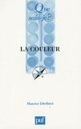
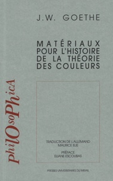
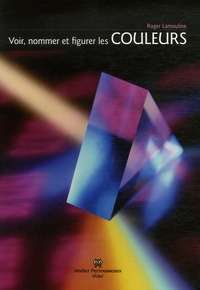
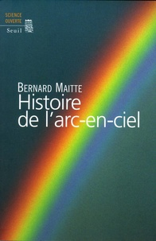
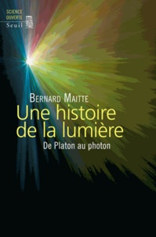
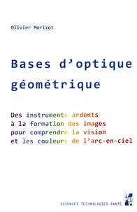
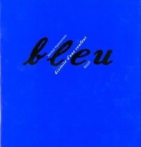
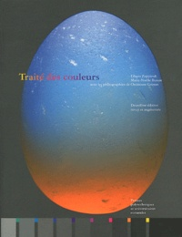

Retrouvez ici une sélection de livres sur l'histoire des couleurs.

Les figures de l’arc-en-ciel
Merveilles de la nature, les arcs-en-ciel ont fait l’objet d’une multitude d’interprétations et mérité une attention très particulière de la part des physiciens et des philosophes, mais aussi des peintres et des coloristes. Michel Blay présente dans ce livre l’histoire des théories de l’arc-en-ciel, depuis les travaux d’Aristote dans les Météorologiques jusqu’à ceux de Georges Airy ou de James Maxwell au IXIe siècle. Il montre le long travail d’élucidation intellectuelle et expérimental qui a été nécessaire pour résoudre l’énigme de l’arc-en-ciel, objet de nombreux débats théologiques et scientifiques. L’auteur analyse en parallèle la question centrale de la nature des couleurs - point de convergence de préoccupations scientifiques et picturales - depuis Newton jusqu’aux travaux de Goethe et de Paul Klee.
Emprunter
Histoire des couleurs
Les couleurs ne sont pas la réalité des corps, elles ne sont pas la vie, ni exactement une loi de la Nature ; elles sont le reflet d’une abstraction de la Nature, l’artifice dans le naturel, c’est-à-dire des figures… En fait, le domaine de la couleur recouvre une aire partagée entre l’art et la science, entre le physique et la psychologie, un terrain qui mesure les limites des deux cultures, pour brouiller la clarté de leurs idées, un terrain d’approche facile mais que n’atteignent jamais les méthodes analytiques et expérimentales.
Emprunter

La couleur (11e édition.)
Nous avons bien du mal à cerner dans leur totalité les processus physiques de l’arc-en-ciel, de l’aurore boréale aux lueurs colorées ou encore du mystérieux, rare et fugace rayon vert. C’est que la couleur, si évidemment présente, n’est ni une matière, ni même une fraction de lumière. La couleur est une sensation, qui imprime en nous des sentiments et des impressions répercutés par la vision. De sa perception jusqu’aux symboles que nous lui attribuons en passant par la trichromie, les pigments naturels ou la colorimétrie, cet ouvrage nous invite à découvrir la couleur dans tous ses états.
Emprunter

Matériaux pour l’histoire de la théorie des couleurs
« Roman de l’esprit européen » pour Thomas Mann, génial pressentiment de ce qui, plus de cent vingt ans plus tard, fut écrit au titre de la « crise des sciences européennes », la Théorie des couleurs de Goethe se tient au carrefour d’une histoire des sciences et d’une histoire de l’humanité européenne. Publiée en 1810, elle se présente en trois grandes parties : une « partie didactique », une « partie polémique » et une « partie historique ». Cette dernière, les « Matériaux pour l’histoire de la théorie des couleurs » est traduite ici intégralement pour la première fois en français. Véritable monument de documentation sur les couleurs et le visible, chez les Anciens - grecs et latins - et les Modernes, ce texte donne leur base et leur développement historique aux analyses fondamentales de ce que Goethe a appelé sa « chromatique «. Rompant explicitement avec les travaux de Newton, celle-ci situe l’investigation goethéenne en dehors de la physique mathématique et fait retour au « phénomène », c’est-à-dire au champ de la perception et à son horizon historique. Dans ce double champ se jouent les moments cruciaux du » monde de la vie », de la Bildung des hommes et des arts visuels, au premier rang desquels la peinture.
Emprunter

Voir, nommer et figurer les couleurs: du cercle de Newton aux pixels tricolores
Il y a cinquante ans, à l’école technique, on apprenait à représenter géométriquement les couleurs à l’aide d’un triangle. De nos jours, le triangle est toujours là, cette fois à la portée de tous, mais caché dans les logiciels de nos ordinateurs. Et le vocabulaire, lui aussi, a bien› changé. On parle de pixels tricolores et de palettes «compatibles Web», de couleurs RGB, RVB, HSV, TSL, CMYK ou CMJN.
Pourquoi du rouge mélangé à du vert donne-t-il du jaune sur l’écran d’un ordinateur et nullement sur la palette d’un peintre ? Pourquoi une personne sur douze ne distingue-t-elle pas le rouge du vert, y compris chez les peintres ? Comment notre rétine parvient-elle à créer la sensation colorée ? Qu’est-ce que le cyan, le magenta ? Comment est-il possible de donner une teinte précise à chaque élément coloré d’une image de télévision, d’ordinateur ou de magazine ? Existe-t-il de nos jours une théorie des couleurs faisant l’unanimité ? A la fois historique et technique, cet ouvrage répond, entre autres, à toutes ces questions, dans un langage simple et clair accessible à tous. Une manière originale d’entrer dans le monde des couleurs.
Emprunter

Histoire de l’arc-en-ciel
Quand Isaac Newton donna une théorie des couleurs, on l’accusa de » désenchanter l’arc-en-ciel «. Les équations de la physique ont-elles vraiment ôté son charme au plus spectaculaire des phénomènes naturels ? Que les ennemis de Newton se rassurent : aucune des avancées scientifiques dans la compréhension de l’arc-en-ciel n’a réduit l’émerveillement des spectateurs, aiguisant bien au contraire leur curiosité et la reportant sur des phénomènes d’une subtilité inattendue. C’est l’histoire des conceptions de l’arc-en-ciel qui est retracée ici. Suivant ce fil irisé pour traverser plus de deux mille ans de physique, l’auteur nous montre que les grandes découvertes sont rarement décisives, que les retours en arrière sont fréquents et que certaines questions se reposent, sous des formes nouvelles, à des siècles d’écart. Qu’est-ce qu’une époque retient comme explication satisfaisante du phénomène ? Que gagne Aristote à y voir un » diaphane en acte «, Ibn al-Haytham à privilégier l’approche expérimentale ou Kepler à y instiller une bonne dose de mysticisme ? Et qu’y perdent aussi ces grands novateurs, incapables souvent de comprendre la réelle portée de leurs découvertes ? Chacun apporte une réponse qui n’est jamais la réponse. L’arc-en-ciel observé différera toujours des modèles censés le décrire, mais cette multiplication des points de vue est en elle-même un perpétuel réenchantement.
Emprunter

Une histoire de la lumière: de Platon au photon (Édition mise à jour.)
De la sensation commune à la compréhension scientifique, nos idées sur la nature et les propriétés de la lumière ont connu un long cheminement depuis les théories de Platon jusqu’à la maîtrise du photon. L’Antiquité, la civilisation arabo-islamique, la Renaissance européenne et sa révolution scientifique, puis la science classique du me siècle, les avancées modernes enfin, autant de moments dans la riche histoire de nos connaissances sur la lumière. Ce livre décrit l’élaboration tourmentée des idées, tant philosophiques que scientifiques, qui ont scandé cette histoire, tirant profit des succès comme des échecs, des efforts comme des renoncements. «En regardant d’un oeil critique l’histoire de la lumière, nous pourrons accéder à notre tour à cette logique savoureuse et amère que l’on appelle Science.» La première édition de ce livre, ici considérablement augmentée, a obtenu le prix Jean-Rostand du meilleur ouvrage de vulgarisation scientifique.
Emprunter

Bases d’optique géométrique: des instruments ardents à la formation des images, pour comprendre la vision
et les couleurs de l’arc-en-ciel
Le sentiment d’incompréhension ou de rejet face à la science et à son enseignement est largement répandu de nos jours. Ce fait doit être pris au sérieux et ne pourra être dépassé qu’en offrant une approche de la science qui irait au-delà du dogmatisme ou d’un simple traitement formel et mathématique, qui ose se poser des questions quant à sa construction et à son essence même. Ainsi, ce livre a pour objectif de proposer un enseignement de physique – et en particulier d’optique géométrique – porteur d’un sens qui dépasse son champ habituel.
Ce manuel pratique, pédagogique et historique propose de présenter en des termes aussi simples que possible les bases de l’optique géométrique enseignée à l’université. Il évite les points de détails inutiles et les détours trop techniques, tout en conservant une exigence intacte quant à la précision des concepts manipulés. Il insiste fortement sur la pratique, ainsi que sur l’étude d’éléments clés d’histoire et de philosophie des théories de la lumière, afin d’enrichir et de faciliter la compréhension du modèle actuel.
Ce livre a pour ambition d’être diffusé dans les foyers et dans les bibliothèques comme dans les salles de cours, de pouvoir être lu par des débutants comme par des personnes plus expertes, par des étudiants comme par des enseignants et chercheurs, qu’ils soient physiciens, mathématiciens ou ingénieurs, philosophes ou historiens des sciences. Ou tout simplement curieux.
Emprunter

Bleu histoire d’une couleur
L’histoire de la couleur bleue dans les sociétés européennes est celle d’un complet renversement : pour les Grecs et les Romains, cette couleur compte peu et est même désagréable à l’œil : c’est une couleur barbare. Or aujourd’hui, partout en Europe, le bleu est de très loin la couleur préférée (devant le vert et le rouge). L’ouvrage de Michel Pastoureau raconte l’histoire de ce renversement. En mettant l’accent sur les pratiques sociales de la couleur (lexiques, étoffes et vêtements, vie quotidienne, symboles) et sur sa place dans la création littéraire et artistique, il montre d’abord le désintérêt pour le bleu dans les sociétés antiques. Puis il suit la montée et la valorisation progressives des tons bleus tout au long du Moyen Age et de l’époque moderne. Il insiste notamment sur les enjeux esthétiques, moraux et religieux liés à cette couleur, du XIIe au XVIIIe siècle. Enfin il met en valeur le triomphe du bleu à l’époque contemporaine, dresse un bilan de ses emplois et significations et s’interroge sur son avenir. Parler du bleu c’est nécessairement être conduit à parler aussi des autres couleurs. Celles-ci ne sont donc pas absentes du livre : le vert et le noir, auxquels le bleu fut parfois assimilé ; le blanc et le jaune, auxquels il a fréquemment été associé ou opposé ; et surtout le rouge, son contraire, son complice et son rival depuis le Moyen Age.
Emprunter

Traité des couleurs (Deuxième édition revue et augmentée.)
Le monde des couleurs a toujours éveillé la curiosité de l’homme, tant par sa diversité et sa complexité que par son contenu émotionnel. Depuis des siècles, artistes, artisans, scientifiques, philosophes, historiens et psychologues s’interrogent, chacun à leur manière, sur la nature des couleurs et sur les moyens à mettre en oeuvre afin de s’en servir, de les reproduire ou de les mesurer. du désir de mieux comprendre les couleurs sous tous leurs aspects, et donc de réduire l’éparpillement des connaissances, est née l’idée de ce Traité des Couleurs. Il offre à la curiosité du lecteur une vision synthétique des phénomènes, allant des théories d’Aristote ou de Goethe aux récents développements en optique, en physiologie ou en anthropologie, et des pratiques artisanales les plus anciennes aux dernières modélisations mathématiques. Conçu avec le soin permanent de réintroduire dans la littérature scientifique moderne l’esprit des grands écrits du passé, ce livre se pose en héritier des ouvrages de philosophie naturelle.
Emprunter